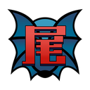
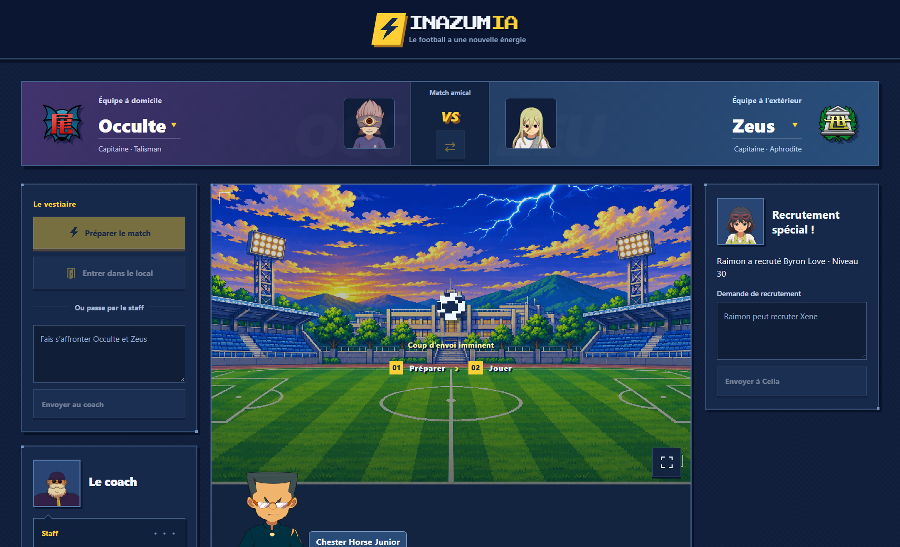
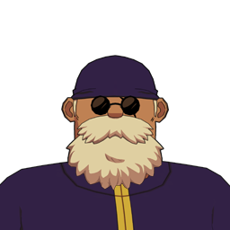
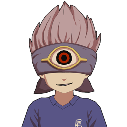
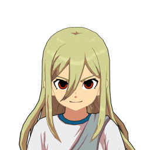
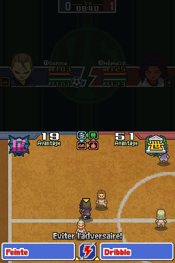
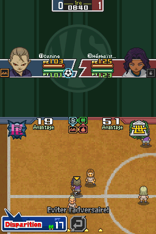
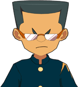

Bonus MCP
Un client externe accède à la même session via l’API web.
Préparer, jouer et commenter une rencontre de football Nintendo DS depuis le navigateur.

OccultePartie 1
Du salon web au moteur Nintendo DS

Vers le jeu
Requêtes JSON, clavier et tactile.
Vers le salon
État de la session et flux vidéo.
Partie 2
Coach, pilote et Chester

« Fais s’affronter Occulte et Zeus. »

Occulte
ZeusLes trois agents partagent la même session. LangChain appelle LM Studio et valide le JSON.
8 s · La règle locale prend le relais en cas d’échec.


get_match_context
Trace de l’appel d’outil
« Le but égalisateur arrive juste à temps pour renverser la tendance ! »
Chester
Commentaire vif et précis, 12 mots maximum.
Neuille
Accroche familière et comparaison absurde, 10 mots maximum.
Exemple donné au modèle · « Oh na, défense en mode avion ! »
Partie 3
Partie 4
MCP, limite et amélioration
Un client externe accède à la même session via l’API web.
Le pilote peut rendre la main si la situation de jeu échappe au worker.
Étendre le jeu libre et mesurer les blocages sur des replays reproductibles.